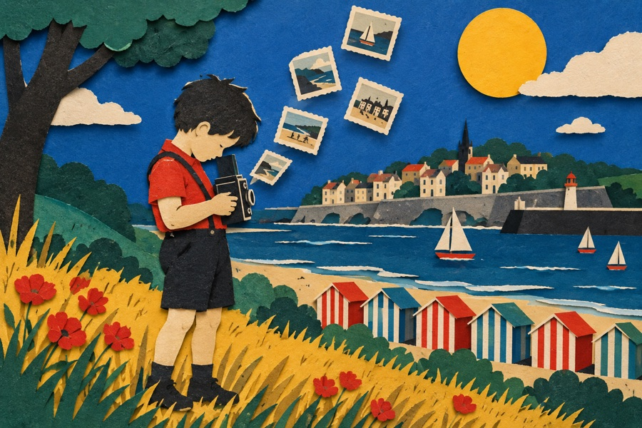
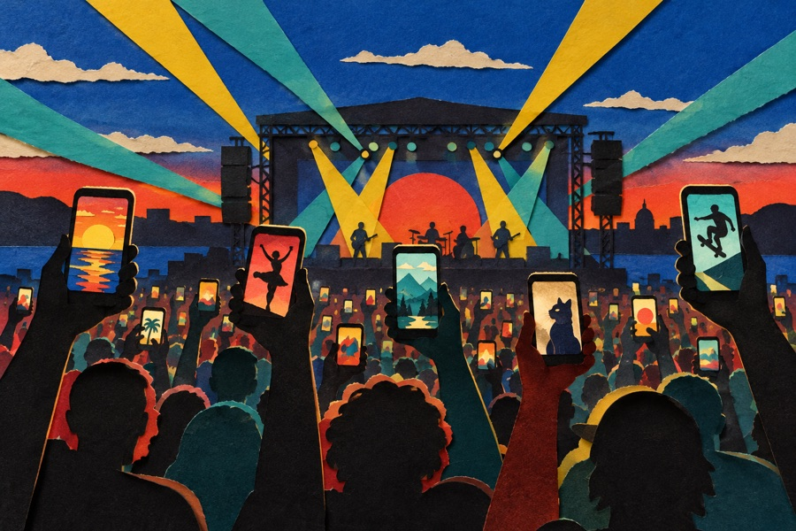
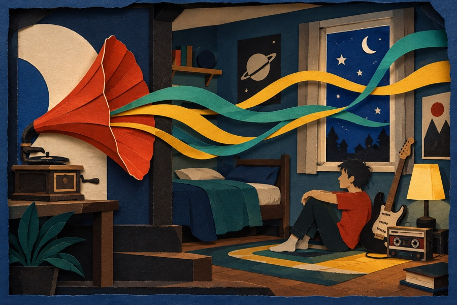
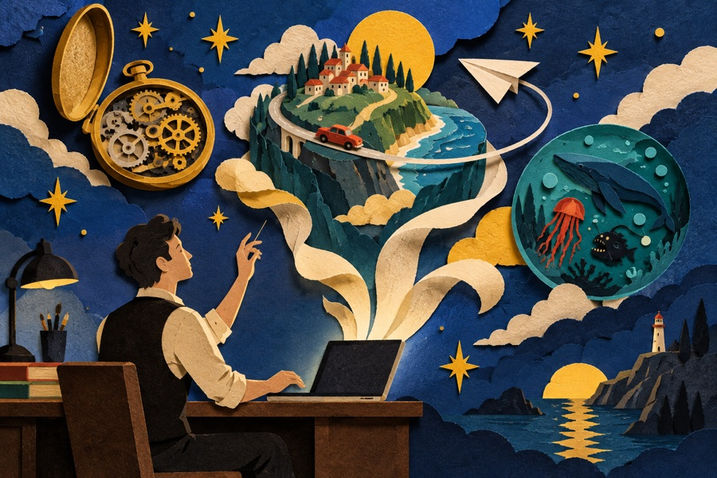
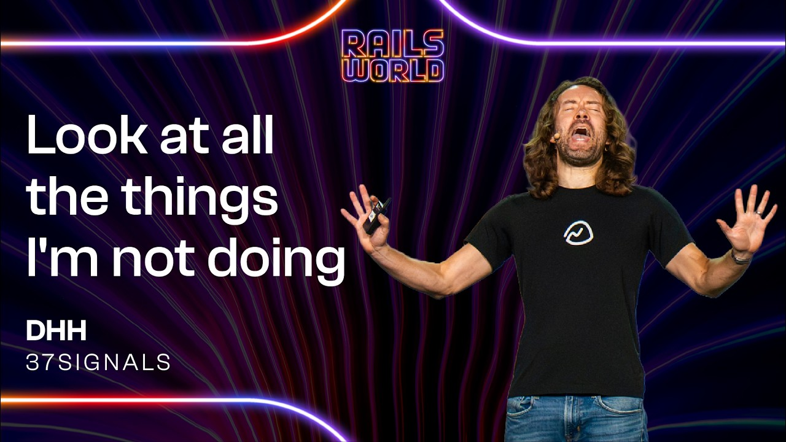
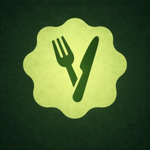
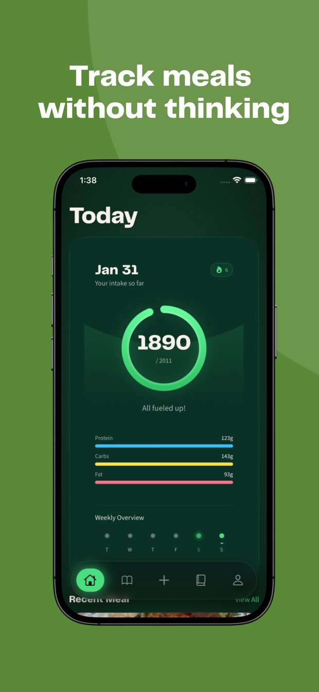
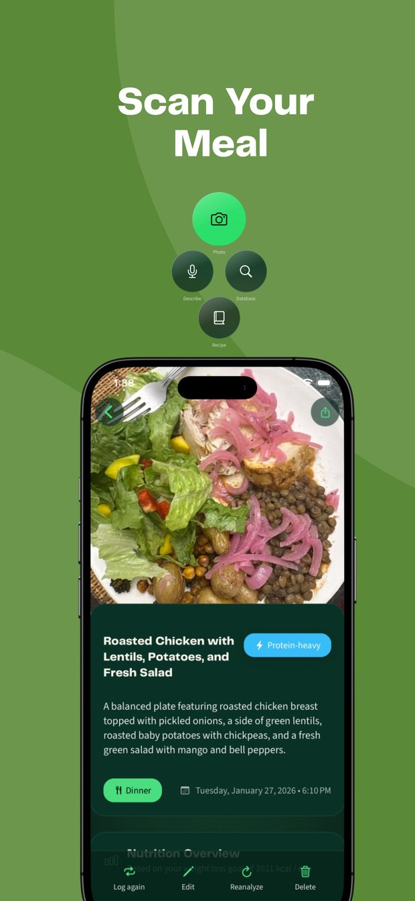
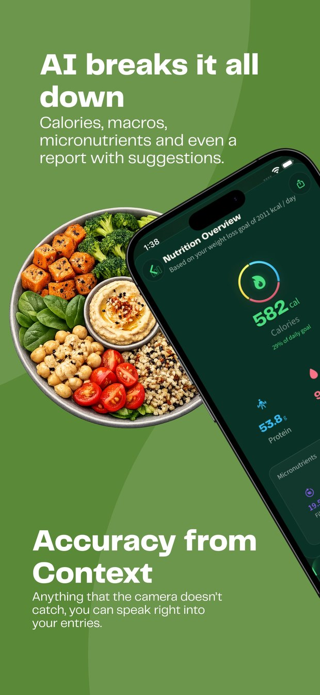

Software isa medium ofcreativeexpression{{ cursorBig }}
A creative producer's viewBuilt with Claude Code and Codex
00 / Cold openT+00:00
What I built for this talk
Built withClaude Codefal: SAM 3 cutouts, Nano Banana backgrounds, Kling 4.0 film ElevenLabs sound
Time1 to 1.5 hours
What I typed“Turn my talk into a paper-cutout scroll story where every scene builds itself as you scroll.”
A year ago this needed a team. This took a few conversations.
00 / ThesisT+02:30
The gatekeeper was never ideas.
It wassyntax{{ cursorBig }}
> and agents are dissolving it
Section 01 of 06T+03:00 · 5 min
01
The pattern
01 / The patternT+03:30
Every medium got cheaper to make
1900 · Kodak BrowniePhoto

Old gateThe studio
Phone camerasVideo

Old gateBroadcast
PodcastsAudio

Old gateRadio
Agents · nowSoftware

Old gateSyntax
01 / The patternT+05:00
The bar moved to what you have to say
ThenCan you produce it?
NowDo you have something worth saying?
The craft did not die.
01 / The patternT+06:30
DHH · Rails World 2026 keynote
“The Kodak Brownie of our era.”
Cheap cameras democratized photography. He applies the same frame to software.
Section 02 of 06T+08:00 · 5 min
02
What changed
02 / What changedT+08:00
37signals stopped writing code by hand
Pencilsdown

Rails World 2026 opening keynote · Austin, Sept 23
Writing code by hand is now an exceptional state at 37signals, not the normal course of business.
DHH dates the inflection to late November 2025, when frontier models became broadly capable.
02 / What changedT+10:30
The job moves from writing to directing
FromWriting code
→
01Directing
02Reviewing
03Deciding
The scarce skill becomes choosing outcomes, shaping systems, and judging what agents build.
Section 03 of 06T+13:00 · 4 min
03
Why the web
03 / Why the webT+13:00
On the web, shipping is a link
https://your-idea.com
{{ cursorInk }}
iOS appThe web
ReviewApp Store reviewNone
InstallDownload requiredNone
ApprovalPlatform approvalNone
03 / Why the webT+14:00
In video, the open platform became the biggest
Share of all US TV viewing · August 2026
YouTube
15.8%
Netflix
7.7%
Disney's streamers
4.8%
Prime Video
4.2%
Anyone can upload to YouTube. Netflix still thrives. Both are video.
Nielsen, The Gauge Excludes YouTube TV
03 / Why the webT+15:00
Creators choose the browser
Vibe Jam 2026 rules
[x]Runs in a browser
[x]No download
[x]No login
[x]Loads almost instantly
It starts smallPieter Levels built his first flight sim in vanilla HTML and JavaScript.
View source teachesBruno Simon's portfolio grew into a Three.js course.
03 / Why the webT+16:00
DHH is taking HEY native
His pointAgents make native cheap enough that a small team can build six apps at once: Mac, Windows, Linux, iOS and Android.
Both are trueNative gets cheaper. The web gets cheaper. Software looks more like content wherever it ships.
The web's partThe easiest place to start. Anyone can share a link, the way anyone can upload a video.
Section 04 of 06T+17:00 · 8 min
04
Software as expression
04 / Software as expressionT+17:00
Software now has the range of other media
01Personalhome-cooked apps
02Playfulgames and toys
03Explanatoryexplorable explanations
04 / PersonalT+17:30

mealscanner.app
I built an app to track my own calories
Snap a photo of a meal and MealScanner estimates the calories and macros. No typing, no spreadsheet.
Built for an audience of one: meOn the App Store since March 2026Free on iOS and Android
A home-cooked app, for my actual meals.



04 / PersonalT+18:00
A poem that only exists as software
Art is like your child.
Scroll down to readScroll back up and it answersTap for sound
Hadi · 2026art-poem.art-poem.workers.dev
04 / PlayfulT+18:30
A portfolio you drive through
Instead of a grid of thumbnails, Bruno Simon built a small 3D island. You drive a toy car around it with your keyboard, and his projects are places you find along the way.
400K+Visits after launch
Launched October 2019Three.js and Cannon.jsRebuilt for WebGPU
bruno-simon.com
04 / PlayfulT+19:15
A cabinet of web toys
2019The Deep SeaScroll down through the ocean.
June 2023The Password GameBuilt in about two months.
January 2024Infinite CraftCombine elements into new ones.
The closest existing model for software as a zine.neal.fun
04 / PlayfulT+20:00
A flight sim in thirty minutes
Pieter Levels · February 2025
~30 minFrom a Cursor prompt to a playable 3D game
17,000Peak concurrent players
CaveatLevels already had a large audience. 404 Media: yours probably won't earn what his did.
04 / PlayfulT+20:45
The Vibe Jam bar keeps rising
90%Minimum share of AI-written code
1,000+Submissions in 2025, judged with Andrej Karpathy
$40KIn prizes for 2026
Colyseus found 2026 entries noticeably more polished than 2025.
04 / PlayfulT+21:15
Same brief, two different games
Claude Fable 5 · Claude Code for webRaccoon HeistMediocre as a finished game, impressive as a start.
Codex · same briefMoonlight & MayhemA much better game, in Willison's view.
The model is the instrument. Someone still has to judge the result.
04 / ExplanatoryT+22:15
Essays you can play with
Nicky Case · 2017The Evolution of TrustTeaches game theory by making you play it, in about 30 minutes.
Bartosz CiechanowskiCameras, watches, enginesDrag and rotate the machinery as you read.
04 / Software as expressionT+23:30
What the examples have in common
1Each began with someone who had something to say.
2Anyone who can describe an idea can now make one.
3Taste, concept, and an audience did not get cheaper.
Section 05 of 06T+25:00 · 4 min
05
What is scarce
05 / What is scarceT+25:00
What gets scarce when building is cheap
TasteMaking is cheap. Making something people want to play is not.
QualityAccessibility, performance, motion, and responsive behavior.
JudgmentChoosing outcomes, shaping systems, evaluating what agents build.
New userDHH asks apps to expose a CLI for the user's own agent. What is an interface when an agent is also a user?
05 / What is scarceT+27:00
Front-end people are the editors of this wave
When everyone could publish video, editors and producers mattered more, not less.